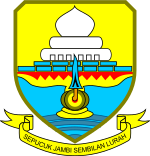

My hometown
Jambi

Jambi city is the capital of Jambi Province which reside in the east coast of Sumatra Island.
There are serveral version of stories regarding the origin of the name of Jambi. One in particular states
that the names comes from the ruler at the time which was named "Puteri Selaras Pinang Masak". Due to its relation with
the Majapahit Empire, the language gets heavily influenced with javanese. In accordance to the name of the ruler, the Empire
was named "jambe", which means pinang in javanese, gradually the locals called it Jambi